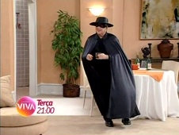
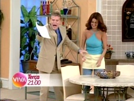

Sai de Baixo
| reprisado de | 18/05/2010 a 03/04/2012 (1º ciclo) |
|---|---|
| em 6 temporadas, com 196 episódios (45 pulos, no 1º ciclo) | |
| frequência | segunda-feira a sexta-feira • sábados |
| faixa | nove da noite • cinco da tarde |
| horário alternativo | seg a sex, à 1h30 e às 14h30 • dom, 12h |
Gravado no Teatro Procópio Ferreira, em São Paulo, humorístico traçou uma trajetória de sucesso com seu elenco carismático e marcou os fins de noite de domingo da Globo de 1996 a 2002, nunca saindo da memória do público brasileiro. Sai de Baixo era o carro-chefe da grade original do canal Viva, sendo exibido, naquele primeiro momento, de segunda a sexta em horário nobre, às nove da noite, com dois horários alternativos: às duas e meia da manhã, e às duas e meia da tarde, antecedendo a faixa de novelas (que começava às três e meia, com Quatro Por Quatro).
Sai de Baixo foi o primeiro programa humorístico a ser exibido no Viva e o segundo do canal, estreado logo após Mulher, às 21h30 de 18/05/2010, uma terça-feira. Uma característica comum dos ciclos de reprises naqueles primeiros anos foi bastante sentida já nessa 1ª rodada de Sai de Baixo: com a exibição diária, rapidamente denotaram-se alguns "saltos" de episódios. Além dos pulos, também ocorreram discrepâncias cronológicas (consultar aba exibição). Os episódios pulados da 1ª temporada chegaram a ser reprisados entre 2005 e 2006, à época das comemorações dos 40 anos da TV Globo, no Multishow. O Viva contemplou a maior parte das edições omitidas de toda a série, aos poucos, em ciclos subsequentes de exibição.
O Viva precipuamente disporia de um horário para a edição da semana de TV Xuxa, às 17h, no sábado, com faixa alternativa no domingo, ao meio-dia. Todavia, isso não se concretizou. Sai de Baixo assumiu esse período da programação - inclusive o momento alternativo -, tendo, assim, seis episódios reprisados semanalmente! Até outubro, enquanto permaneceu em frequência diária, Sai de Baixo alcançou a penúltima dezena de episódios de sua 4ª temporada.
Ao final de julho de 2010, Sai de Baixo passou a ser patrocinado pelo creme dental Oral B; em agosto, o sabão em pó Omo também tornou-se patrocinador. Até aquele mês, “Sai de Baixo” era o líder de audiência do Canal Viva e, mesmo em apenas 30% da base de pesquisa do Ibope, já colocava-se no 16º lugar no ranking de audiência de junho.
Em 01/09/2010, quarta-feira, o Viva estreou a Sessão Viva Megapix às dez da noite. Com exibição de segunda-feira a sexta-feira, essa sessão ganhou um horário alternativo algumas horas depois, às quatro e meia da manhã. Isso provocou uma alteração na grade da madrugada, a qual desbancou o horário alternativo do Sai de Baixo no dito turno. Desse modo, os episódios da sexta à noite passassaram a ser exibidos apenas uma vez: na exibição alternativa de segunda à tarde, veiculava-se a história exibida no sábado anterior (assim como no alternativo de domingo).
Em outubro de 2010, o Viva estreou o primeiro número de alterações significativas em sua grade de programação. Entre elas, houve uma renovação voltada à faixa de humor. Sai de Baixo deixava de ser diário, e o horário das nove da noite passava a acolher programas diferentes a cada dia da semana: A Comédia da Vida Privada, em novo ciclo, às segundas-feiras; Sai de Baixo, prosseguindo seu ciclo, às terças-feiras; Faça Sua História e Sob Nova Direção, inéditos no Viva, às quartas-feiras; Casos e Acasos e Garotas do Programa, inéditos no Viva, às quintas-feiras; e Sexo Frágil, em novo ciclo, junto de Vida ao Vivo Show, inédito no Viva, às sextas-feiras.
Desse modo, Sai de Baixo fixou-se às 21h das terças-feiras, com exibição alternativa aos sábados, às 20h. Com o fim da frequência diária, o horário alt. das 14h30 deixou de existir, destinado então à Escolinha do Professor Raimundo, outra novidade daquela nova programação, como alternativo ao episódio da noite anterior (exibido às oito e meia da noite, no lugar de Brava Gente).
Sai de Baixo teve uma repescagem em dezembro, para festejar o Natal: o Viva resgatou os episódios natalinos já exibidos à época da fase diária, além de trazer mais um de "brinde" (consultar aba exibição). Depois, emendou com a continuidade do ciclo, ao fim da 4ª temporada, coincidindo a reprise habitual com as comemorações natalinas. Foi, também, naquele mês, que o conjunto de programas de comédia exibidos na faixa noturna passou a responder pela alcunha de Viva Rindo, com direito a vinheta própria.
Em 18/07/2011, Roque Santeiro substituiu Vale Tudo na faixa de novelas da 0h45 do Viva. Com ela, porém, o horário adiantou-se para à 0h15. A Escolinha do Professor Raimundo passou a começar, então, às 20h, e não mais às 20h30, permitindo que os programas da linha de humor assumissem essa faixa, ficando no ar até 21h30.
O 1º ciclo do Sai de Baixo chegou ao fim em 03/04/2012, resultando um saldo final de 196 episódios reexibidos contra 45 pulados. O 2º ciclo foi iniciado na semana seguinte, e logo revelou a boa surpresa: grande parte dos episódios anteriormente pulados estavam ganhando reprise em sua ordem original.
Em maio de 2013, embalado pelos festejos de seus 3 anos no ar, o Viva reuniu o elenco de Sai de Baixo para a produção de 4 episódios inéditos, exibidos como "Sai de Baixo Especial" de junho a julho. Por volta de novembro daquele ano, Sai de Baixo ganhou um novo horário alternativo, às dez e quinze da noite de domingo, logo remanejado para uma faixa ainda mais próxima de seu horário de exibição original: às onze e meia da noite.
Entre 2013 e 2014, o Viva transicionou a frequência de todas as faixas de novelas de segunda-feira a sexta-feira para segunda-feira a sábado: primeiro, foi Água Viva, à 0h, em setembro de 2013; depois, História de Amor, da faixa das 15h30, em março de 2014; por fim, A Viagem, na faixa das 16h30 agora realocada às 14h30, em julho de 2014. Com a entrada das novelas aos sábados, a grade desse dia foi repensada. Em março, Sai de Baixo perdeu o alternativo noturno do sábado, mas ganhou o período das dez e quinze da noite das sextas-feiras. Em maio, ambos os horários alternativos foram levemente antecedidos: sexta, às dez da noite; domingo, às onze da noite. Em junho, Sai de Baixo chegou a ser testado às nove da manhã de domingo! O horário diurno não durou muitas semanas.
Em 14/07/2014, segunda-feira, o Viva estreou A Turma do Didi às 20h30. O programa era exibido diariamente, o que impactou a sequência noturna: Sai de Baixo voltou a ser exibido no horário que ocupava em 2010, às nove da noite. Perdeu a exibição das sextas-feiras, mas voltou aos sábados, às oito da noite. O horário de domingo também voltou para a casa das onze e meia da noite. A partir do 2º trimestre de 2015, o horário dos sábados foi levemente antecedido para sete e quarenta e cinco da noite.
Em 2016, o fim do 2ª ciclo de Sai de Baixo foi um dos primeiros programas do acervo da Globo a estar presente no Viva Play.
chamadas
A primeira chamada de Sai de Baixo anunciava: "Depois de anos de aplausos, eles estão de volta. E você vai se divertir com as melhores histórias de Caco, Cassandra e a família dela! Fique ligado, porque se a casa cair... Sai de Baixo! De segunda a sexta, nove da noite, no Viva!"

Em julho de 2010, quando a exibição já estava na 2ª temporada, uma nova chamada passou a ir ao ar, agora com cenas de Márcia Cabrita inclusas: "Se você procura um programa intelectual, com metodologia científica, e o melhor da psicodinâmica familiar, definitivamente este não é o lugar. Mas se você quer dar boas gargalhadas... Sai de Baixo! De segunda a sexta, nove da noite, no Viva."
Próximo do fim do mês de agosto, a promoção do programa destacava a personagem Cassandra: "Ela estava com os nervos à flor da pele! E para conviver com essa turma, aprendeu a arte milenar da chantagem emocional. Cuidado! Se ela cismar com você... Sai de Baixo! De segunda a sexta, nove da noite, no Viva".
No mesmo estilo, um comercial só para Magda: "Ela vive em um mundo à parte, tem um vocabulário próprio e uma sensualidade ímpar! Mas, cuidado! Porque se ela comer banana... Sai de Baixo! De segunda a sexta, nove da noite, no Viva.".

Com as alterações realizadas na programação em outubro de 2010, Sai de Baixo ganhou uma nova promoção: "Alguns fogem do trabalho; outros, da responsabilidade. Mas, quando todos fogem do script... Sai de Baixo! Toda terça, nove da noite, e também sábado, oito da noite, no Viva".
- 
- 
As chamadas dedicadas à personagens, anteriormente mencionadas, seguiram no ar atualizadas com o novo horário de exibição.
Em dezembro de 2010, a repescagem natalina do Sai de Baixo ganhou chamada própria: "Toda terça, o Largo do Arouche entra em clima de Natal! E você acha que essa família quer saber do bom velhinho? (...) Sai de Baixo, especial Natal! Toda terça, nove da noite, no Viva".

Última chamada no ar durante o 1º ciclo, em 2012: "O papel de toda família é dar carinho aos seus membros; auxiliar em sua educação; e se ajudar nas horas difíceis. Mas no Largo do Arouche... Sai de Baixo! Toda terça, oito e meia da noite, no Viva".